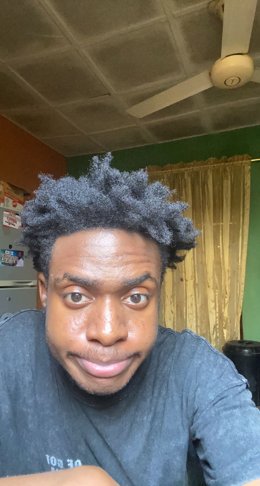

Charles Chukwuike | WDD 130
Hello! My name is Charles Chukwuike and I am from Abuja, Nigeria. I enjoy playing basketball and i'm very good at singing too. I'm a member of the church of jesus christ of latter day saints and believe strongly in the doctrines too.